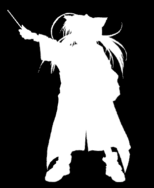
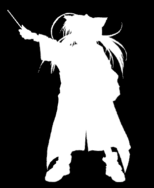
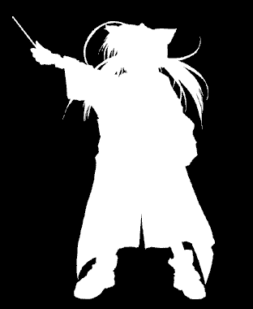

In KAG, you can prepare a so-called mask image separately from the normal foreground image, and display it by cropping the foreground image according to the mask image.
The mask image is a 256-level grayscale image of the same size as the foreground image, and its luminance directly indicates "opacity". In other words, a part with a luminance of 0 is "completely transparent" and a part with a luminance of 255 is "completely opaque". About 128 places are about half transparent. The part that should be displayed is white and the transparent part is black.
Be sure to save the mask image in 256-level grayscale (256-color image). If you save in full color or 16 colors, it will not be displayed properly.
A mask image is an image that retains opacity, while a foreground image is an image that retains color information. The foreground image in this case is called main image.
If you have software that can output such images (such as GIMP for PNG), you do not need to prepare a separate mask file if you use it. In addition, you can easily convert these image formats by using the image format converter included with the Kirikiri SDK.
Save the mask image with the file name of the main image with _m appended. For example, if the main image is hogehoge.png, the mask image will be hogehoge_m.png. This format in which the main image and the mask image are separated is called the main / mask separation format.
The advantage of using a mask image is that you can freely specify the opacity when overlaying the foreground, and if you use a properly processed mask image and main image, the edges are beautifully anti-aliased when overlapping Is to be able to overlap.
 

Example mask (left is main, right is mask)
The mask image is a 256-level grayscale image of the same size as the foreground image, and its luminance directly indicates "opacity". In other words, a part with a luminance of 0 is "completely transparent" and a part with a luminance of 255 is "completely opaque". About 128 places are about half transparent. The part that should be displayed is white and the transparent part is black.
Be sure to save the mask image in 256-level grayscale (256-color image). If you save in full color or 16 colors, it will not be displayed properly.
A mask image is an image that retains opacity, while a foreground image is an image that retains color information. The foreground image in this case is called main image.
Note
For PNG, ERI, and TLG5 / TLG6 images, you can include alpha channel (mask image at the end) in one PNG / ERI / TLG5 file.If you have software that can output such images (such as GIMP for PNG), you do not need to prepare a separate mask file if you use it. In addition, you can easily convert these image formats by using the image format converter included with the Kirikiri SDK.
Save the mask image with the file name of the main image with _m appended. For example, if the main image is hogehoge.png, the mask image will be hogehoge_m.png. This format in which the main image and the mask image are separated is called the main / mask separation format.
The advantage of using a mask image is that you can freely specify the opacity when overlaying the foreground, and if you use a properly processed mask image and main image, the edges are beautifully anti-aliased when overlapping Is to be able to overlap.
Example mask (left is main, right is mask)